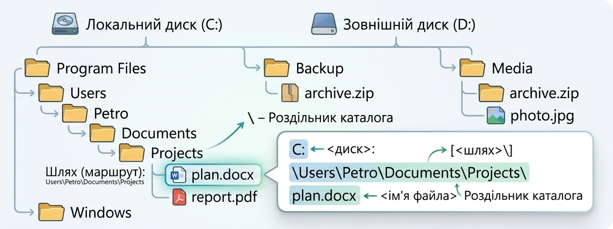
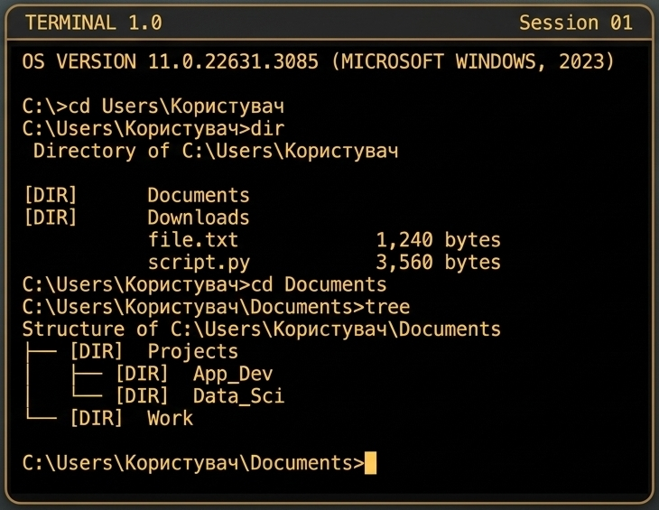

📖 КЗ СОР «Путивльський педагогічний фаховий коледж імені С.В. Руднєва»
Основи операційних систем
Файлова система — сукупність папок і файлів, що зберігаються на зовнішніх носіях ПК.
При такій деревоподібній файловій структурі треба вказувати повне ім'я файлу:

де шлях (маршрут) — це ланцюжок підпорядкованих каталогів, роз'єднаних символом «\».
Дужки:
< > беруть параметри, при написанні конкретних команд їх
опускають.[ ] беруть параметри, які можуть бути чи не бути у команді.{ } використовують у разі, якщо використовується альтернативні параметри
— або один, або інший.
Діалог користувача з ПК здійснюється з допомогою певних команд, які набираються у командному рядку.
Після завантаження ПК операційна система на екрані видає запрошення, у якому міститься інформація про поточний диск, каталог і закінчується символом «>».
Усі дії з файлами та каталогами в операційній системі здійснюються за допомогою команд, які умовно можна поділити на:
1️⃣ Сервісні;
2️⃣ Команди для роботи з дисками;
3️⃣ Команди для роботи з каталогами (підкаталогами);
4️⃣ Команди роботи з файлами.
Команди можна набирати як великими, так і маленькими літерами.
Після команди перед параметрами ставиться пропуск.
Ввести команду — це набрати команду з параметрами у командному рядку та натиснути клавішу вводу (Enter).
Про кожну команду можна отримати довідку:
| Призначення | Команда |
|---|---|
| Очищення екрану | cls |
| Виведення і зміна часу | time [<час>] |
| Виведення і зміна дати | date [<дата>] |
Зміна логічного диска:
Для отримання інформації про диск треба використовувати команду перегляду вмісту каталогів:
де ключі:
/P — забезпечує посторінкове виведення каталогу на екран монітора, для переходу до іншої
сторінки потрібно натиснути будь-яку клавішу;/W — забезпечує виведення списку файлів у п'яти колонках по ширині екрана, в цьому випадку
на екран виводяться лише імена та розширення файлів;/ON — забезпечує виведення файлів за іменем по алфавіту;/OS — забезпечує виведення файлів за розміром, починаючи з меншого розміру;/OD — забезпечує виведення файлів за датою створення, починаючи з більш старих.Форматування здійснюється для того, щоб:
Можна форматувати гнучкі та жорсткі диски. Випадкове форматування жорсткого диска дуже небезпечне, оскільки тоді можна втратити всю записану на ньому інформацію.
У MS DOS форматування дисків виконують за допомогою зовнішньої команди format.com:
де можливі ключі /s — створення системної дискети.
Обмеження: не можна знищувати кореневий і поточний каталоги. Якщо використовується
команда RD, каталог, який знищується, має бути порожнім.
Для поточного каталогу шлях та ім'я можна не зазначати.
CD\CD..де джерело — ім'я файла чи шаблон імен, які копіюються; місце призначення — куди копіюються файл чи група файлів, з тим самим іменем чи з іншим.
За допомогою команди COPY можна створювати нові файли. У цьому випадку джерелом є клавіатура
(CON), місце призначення — ім'я нового файла:
Далі треба ввести з клавіатури текст та натиснути клавіші Ctrl+Z та Enter.
З допомогою вбудованого редактора EDIT можна створювати файли чи редагувати існуючі:
де ключ /P — операційна система робить запит, щоб підтвердити знищення файла після введення
команди.
Ім'я файла, який може бути завантажений (файл з розширенням exe, com,
bat), треба набрати у командному рядку та натиснути клавішу Enter.
Операції над групою файлів виконуються командами DIR, COPY, DEL,
REN, де у параметрі ім'я файла використовують символи «*» та «?». Якщо в командах у назві файлу
є символ ?, то він означає будь-який один допустимий символ алфавіту, а символ *
позначає будь-яку кількість допустимих символів.
Наприклад, дія команди del *.??? поширюється на всі файли, розширення назв яких мають три
символи. Такі імена називають шаблонами.
Для пошуку файлів та каталогів у MS-DOS використовується команда DIR:
де ім'я файла — шаблон групи файлів з певною ознакою пошуку.
cmd)Documents. Перейдіть у цей каталог і перегляньте його вміст
посторінково. Що є в каталозі?MyMSDOS.LAB1. У ньому — каталог LAB2.doc в каталог LAB1.
Занотуйте у протокол точний шлях до каталогу LAB1.LAB1 і перегляньте його вміст.txt. Скопіюйте у підкаталог LAB2. Відредагуйте
його так: на початку файлу напишіть своє прізвище.LAB2 створіть новий текстовий файл. Назву дайте будь-яку. Зміст файлу такий: ваше ім'я та по батькові.C. Коротко опишіть вміст кореневого каталогу у протоколі.